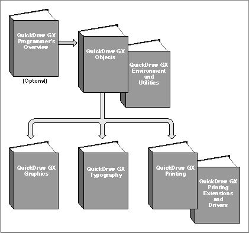

Preface - About This Book
QuickDraw GX is an integrated, object-based approach to graphics programming on Macintosh computers. This book, Inside Macintosh: QuickDraw GX Environment and Utilities, describes a wide variety of QuickDraw GX application-development topics.For application programming purposes, QuickDraw GX augments or replaces the capabilities of some of the Macintosh system software managers documented in other parts of Inside Macintosh. In particular, The Memory Management capabilities, as described in the chapter "QuickDraw GX Memory Management," augment the Macintosh Memory Manager described in Inside Macintosh: Memory. In addition, some of the mathematical functions described in the chapter "QuickDraw GX Mathematics" replace functions described in the "Mathematical Utilities" chapter of Inside Macintosh:Operating System Utilities. However, QuickDraw GX and other parts of Macintosh system software coexist without conflict and you can use both in the same program. Furthermore, the functions described in the chapter "QuickDraw GX and the Macintosh Environment" provide you with an interface to certain Macintosh system software capabilities outside the scope of QuickDraw GX.
Before you read this book, you should already be familiar with Inside Macintosh: QuickDraw GX Objects. Figure P-1 shows the suggested reading order for the QuickDraw GX books. A pictorial overview of Inside Macintosh, including the QuickDraw GX suite of books, appears on the inside back cover.
Figure P-1 Roadmap to the QuickDraw GX suite of books

Preface Contents
- What to Read
- Chapter Organization
- Conventions Used in This Book
- Special Fonts
- Types of Notes
- Numerical Formats
- Type Definitions for Enumerations
- Development Environment
- Developer Products and Support